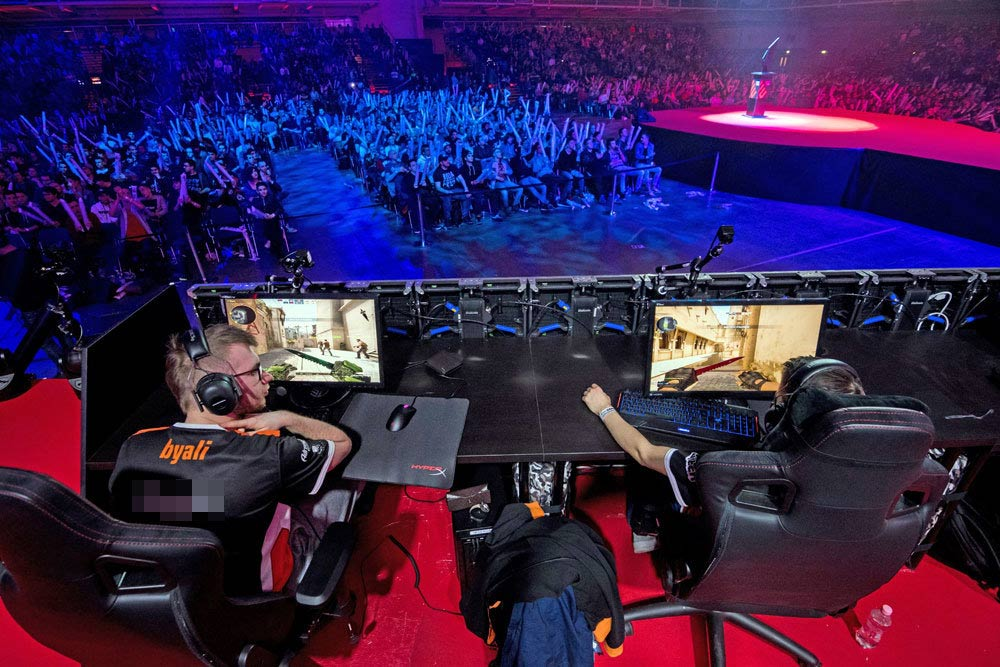

Место проведения
Про площадку
Какой из городов России получит право принимать первый международный кибер-турнир пока неизвестно, ведь
заявочная
кампания стартовала в конце 2021 года и продлится до мая 2022 года.
Шанс стать организатором мероприятия есть у
любого города страны, на территории которого имеются спортивные объекты соответствующей вместительности, большие
концертные залы и вместительные выставочные павильоны, позволяющие развернуть площадки для проведения
тематических
турниров. Предположительно все мероприятия турнира должно быть рассчитаны приблизительно на 300 000 человек
(участники и зрители вместе).
Фото с места событий

Вероятные претенденты
Хотя кампания только стартовала, уже 40 регионов страны проявили взять на себя организацию и проведение
турниров.
Среди наиболее вероятных претендентов на звание организатора, по мнению экспертов, представлены такие города,
как:
Москва, Питер, Калуга, Владивосток, Челябинск, Нижний Новгород, Новосибирск, Оренбург, Тверь, Пермь, Красноярск,
Югра, Севастополь…, а также большие города Татарстана и Удмуртии.
© Берёзка Вадим Сергеевич